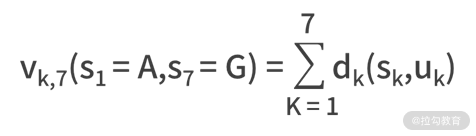
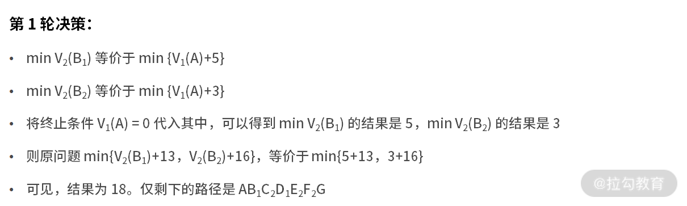
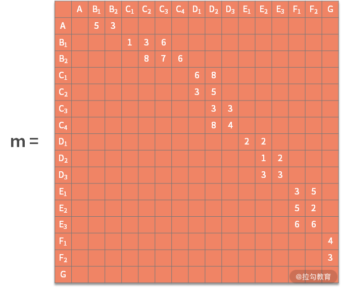

- 00 数据结构与算法，应该这样学！.md.html
- 01 复杂度：如何衡量程序运行的效率？.md.html
- 02 数据结构：将“昂贵”的时间复杂度转换成“廉价”的空间复杂度.md.html
- 03 增删查：掌握数据处理的基本操作,以不变应万变.md.html
- 04 如何完成线性表结构下的增删查？.md.html
- 05 栈：后进先出的线性表，如何实现增删查？.md.html
- 06 队列：先进先出的线性表，如何实现增删查？.md.html
- 07 数组：如何实现基于索引的查找？.md.html
- 08 字符串：如何正确回答面试中高频考察的字符串匹配算法？.md.html
- 09 树和二叉树：分支关系与层次结构下，如何有效实现增删查？.md.html
- 10 哈希表：如何利用好高效率查找的“利器”？.md.html
- 11 递归：如何利用递归求解汉诺塔问题？.md.html
- 12 分治：如何利用分治法完成数据查找？.md.html
- 13 排序：经典排序算法原理解析与优劣对比.md.html
- 14 动态规划：如何通过最优子结构，完成复杂问题求解？.md.html
- 15 定位问题才能更好地解决问题：开发前的复杂度分析与技术选型.md.html
- 16 真题案例（一）：算法思维训练.md.html
- 17 真题案例（二）：数据结构训练.md.html
- 18 真题案例（三）：力扣真题训练.md.html
- 19 真题案例（四）：大厂真题实战演练.md.html
- 20 代码之外，技术面试中你应该具备哪些软素质？.md.html
- 21 面试中如何建立全局观，快速完成优质的手写代码？.md.html
- 加餐 课后练习题详解.md.html
- 捐赠
14 动态规划：如何通过最优子结构，完成复杂问题求解？
在前面课时中，我们学习了分治法的思想，并以二分查找为例介绍了分治的实现逻辑。
我们提到过，分治法的使用必须满足 4 个条件：
- 问题的解决难度与数据规模有关；
- 原问题可被分解；
- 子问题的解可以合并为原问题的解；
- 所有的子问题相互独立。
然而在实际工作中还存在这样一类问题，它们满足前 3 个条件，唯独不满足第 4 个条件。那么这类问题我们该怎么解决呢？本课时，我们就来学习求解这类问题的动态规划算法，它是最常用的算法之一。
什么是动态规划
从数学的视角来看，动态规划是一种运筹学方法，是在多轮决策过程中的最优方法。
那么，什么是多轮决策呢？其实多轮决策的每一轮都可以看作是一个子问题。从分治法的视角来看，每个子问题必须相互独立。但在多轮决策中，这个假设显然不成立。这也是动态规划方法产生的原因之一。
动态规划是候选人参加面试的噩梦，也是面试过程中的难点。虽然动态规划很难，但在实际的工作中，使用频率并不高，不是所有的岗位都会用到动态规划。
最短路径问题
接下来。我们来看一个非常典型的例子，最短路径问题。如下图所示：

每个结点是一个位置，每条边是两个位置之间的距离。现在需要求解出一条由 A 到 G 的最短距离是多少。
不难发现，我们需要求解的路线是由 A 到 G，这就意味着 A 要先到 B，再到 C，再到 D，再到 E，再到 F。每一轮都需要做不同的决策，而每次的决策又依赖上一轮决策的结果。
例如，做 D2 -> E 的决策时，D2 -> E2 的距离为 1，最短。但这轮的决策，基于的假设是从 D2 出发，这就意味着前面一轮的决策结果是 D2。由此可见，相邻两轮的决策结果并不是独立的。
动态规划还有一个重要概念叫作状态。在这个例子中，状态是个变量，而且受决策动作的影响。例如，第一轮决策的状态是 S1，可选的值是 A，第二轮决策的状态是 S2，可选的值就是 B1 和 B2。以此类推。
动态规划的基本方法
动态规划问题之所以难，是因为动态规划的解题方法并没有那么标准化，它需要你因题而异，仔细分析问题并寻找解决方案。虽然动态规划问题没有标准化的解题方法，但它有一些宏观层面通用的方法论：
下面的 k 表示多轮决策的第 k 轮
- 分阶段，将原问题划分成几个子问题。一个子问题就是多轮决策的一个阶段，它们可以是不满足独立性的。
- 找状态，选择合适的状态变量 Sk。它需要具备描述多轮决策过程的演变，更像是决策可能的结果。
- 做决策，确定决策变量 uk。每一轮的决策就是每一轮可能的决策动作，例如 D2 的可能的决策动作是 D2 -> E2 和 D2 -> E3。
- 状态转移方程。这个步骤是动态规划最重要的核心，即 sk+1= uk(sk) 。
- 定目标。写出代表多轮决策目标的指标函数 Vk,n。
- 寻找终止条件。
了解了方法论、状态、多轮决策之后，我们再补充一些动态规划的基本概念。
- 策略，每轮的动作是决策，多轮决策合在一起常常被称为策略。
- 策略集合，由于每轮的决策动作都是一个变量，这就导致合在一起的策略也是一个变量。我们通常会称所有可能的策略为策略集合。因此，动态规划的目标，也可以说是从策略集合中，找到最优的那个策略。
一般而言，具有如下几个特征的问题，可以采用动态规划求解：
- 最优子结构。它的含义是，原问题的最优解所包括的子问题的解也是最优的。例如，某个策略使得 A 到 G 是最优的。假设它途径了 Fi，那么它从 A 到 Fi 也一定是最优的。
- 无后效性。某阶段的决策，无法影响先前的状态。可以理解为今天的动作改变不了历史。
- 有重叠子问题。也就是，子问题之间不独立。这个性质是动态规划区别于分治法的条件。如果原问题不满足这个特征，也是可以用动态规划求解的，无非就是杀鸡用了宰牛刀。
动态规划的案例
到这里，动态规划的概念和方法就讲完了。接下来，我们以最短路径问题再来看看动态规划的求解方法。在这个问题中，你可以采用最暴力的方法，那就是把所有的可能路径都遍历一遍，去看哪个结果的路径最短的。如果采用动态规划方法，那么我们按照方法论来执行。
动态规划的求解方法
具体的解题步骤如下：
1. 分阶段
很显然，从 A 到 G，可以拆分为 A -> B、B -> C、C -> D、D -> E、E -> F、F -> G，6 个阶段。
2. 找状态
第一轮的状态 S1 = A，第二轮 S2 = {B1,B2}，第三轮 S3 = {C1,C2,C3,C4}，第四轮 S4 = {D1,D2,D3}，第五轮 S5 = {E1,E2,E3}，第六轮 S6 = {F1,F2}，第七轮 S7 = {G}。
3. 做决策
决策变量就是上面图中的每条边。我们以第四轮决策 D -> E 为例来看，可以得到 u4(D1)，u4(D2)，u4(D3)。其中 u4(D1) 的可能结果是 E1 和 E2。
4. 写出状态转移方程
在这里，就是 *sk*+1 = *uk*(*s*k)。
5. 定目标
别忘了，我们的目标是总距离最短。我们定义 *dk*(*sk*,*u*k) 是在 sk 时，选择 uk 动作的距离。例如，*d*5(*E*1,*F*1) = 3。那么此时 n = 7，则有，

就是最终要优化的目标。
6. 寻找终止条件
- 很显然，这里的起止条件分别是，s1 = A 和 s7 = G。
- 接下来，我们把所有的已知条件，凝练为上面的符号之后，只需要借助最优子结构，就可以把问题解决了。最优子结构的含义是，原问题的最优解所包括的子问题的解也是最优的。
- 套用在这个例子的含义就是，如果 A -> … -> F1 -> G 是全局 A 到 G 最优的路径，那么此处 A -> … -> F1 也是 A 到 F1 的最优路径。
- 因此，此时的优化目标 min Vk,7(s1=A, s7=G)，等价于 min { Vk,6(s1=A, s6=F1)+4， Vk,6(s1=A, s6=F2)+3 }。
- 此时，优化目标的含义为，从 A 到 G 的最短路径，是 A 到 F1 到 G 的路径和 A 到 F2 到 G 的路径中更短的那个。
- 同样的，对于上面式子中，Vk,6(s1=A,s6=F1) 和 Vk,6(s1=A,s6=F2)，仍然可以递归地使用上面的分析方法。
计算过程详解
好了，为了让大家清晰地看到结果，我们给出详细的计算过程。为了书写简单，我们把函数 Vk,7(s1=A, s7=G) 精简为 V7(G)，含义为经过了 6 轮决策后，状态到达 G 后所使用的距离。我们把图片复制到这里一份，方便大家不用上下切换。

我们的优化目标为 min Vk,7(s1=A, s7=G)，因此精简后原问题为，min V7(G)。



因此，最终输出路径为 A -> B1 -> C2 -> D1 -> E2 -> F2 -> G，最短距离为 18。
代码实现过程
接下来，我们尝试用代码来实现上面的计算过程。对于输入的图，可以采用一个 m x m 的二维数组来保存。在这个二维数组里，m 等于全部的结点数，也就是结点与结点的关系图。而数组每个元素的数值，定义为结点到结点需要的距离。

在本例中，可以定义输入矩阵 m（空白处为0），如下图所示：

代码如下：
public class testpath {
public static int minPath1(int[][] matrix) {
return process1(matrix, matrix[0].length-1);
}
// 递归
public static int process1(int[][] matrix, int i) {
// 到达A退出递归
if (i == 0) {
return 0;
}
// 状态转移
else{
int distance = 999;
for(int j=0; j<i; j++){
if(matrix[j][i]!=0){
int d_tmp = matrix[j][i] + process1(matrix, j);
if (d_tmp < distance){
distance = d_tmp;
}
}
}
return distance;
}
}
public static void main(String[] args) {
int[][] m = {{0,5,3,0,0,0,0,0,0,0,0,0,0,0,0,0},{0,0,0,1,3,6,0,0,0,0,0,0,0,0,0,0},{0,0,0,0,8,7,6,0,0,0,0,0,0,0,0,0},{0,0,0,0,0,0,0,6,8,0,0,0,0,0,0,0},{0,0,0,0,0,0,0,3,5,0,0,0,0,0,0,0},{0,0,0,0,0,0,0,0,3,3,0,0,0,0,0,0},{0,0,0,0,0,0,0,0,8,4,0,0,0,0,0,0},{0,0,0,0,0,0,0,0,0,0,2,2,0,0,0,0},{0,0,0,0,0,0,0,0,0,0,0,1,2,0,0,0},{0,0,0,0,0,0,0,0,0,0,0,3,3,0,0,0},{0,0,0,0,0,0,0,0,0,0,0,0,0,3,5,0},{0,0,0,0,0,0,0,0,0,0,0,0,0,5,2,0},{0,0,0,0,0,0,0,0,0,0,0,0,0,6,6,0},{0,0,0,0,0,0,0,0,0,0,0,0,0,0,0,4},{0,0,0,0,0,0,0,0,0,0,0,0,0,0,0,3}};
System.out.println(minPath1(m));
}
}
代码解读
下面我们对这段代码进行解读：
代码的 27 行是主函数，在代码中定义了二维数组 m，对应于输入的距离图。m 是 15 x 16 维的，我们忽略了最后一行的全 0（即使输入也不会影响结果）。
然后调用函数 minPath1。在第 2 到第 4 行，它的内部又调用了 process1(matrix, matrix[0].length-1)。在这里，matrix[0].length-1 的值是 15，表示的含义是 matrix 数组的第 16 列（G）是目的地。
接着进入 process1 函数中。我们知道在动态规划的过程中，是从后往前不断地推进结果，这就是状态转移的过程。对应代码中的 13-24 行：
- 第 15 行开始循环，j 变量是纵向的循环变量。
- 第 16 行判断 matrix[j][i] 与 0 的关系，含义为，只有值不为 0 才说明两个结点之间存在通路。
- 一旦发现某个通路，就需要计算其距离。计算的方式是 17 行的，d_tmp = matrix[j][i] + process1(matrix, j)。
- 当得到了距离之后，还需要找到最短的那个距离，也就是 18 到 20 行的含义。这就是动态规划最优子结构的体现。
- 一旦 i 减小到了 0，就说明已经到了起点 A。那么 A 到 A 的距离就是 0，直接第 10 行的 return 0 就可以了。
- 经过运行，这段代码的输出结果是 18，这与我们手动的推导结果一致。
练习题
在 08 课时中，我们讲述“字符串匹配算法的案例”时提到过，最大公共子串也可以使用动态规划的方法来做。
案例题目如下：
假设有且仅有 1 个最大公共子串。比如，输入 a = “13452439”， b = “123456”。由于字符串 “345” 同时在 a 和 b 中出现，且是同时出现在 a 和 b 中的最长子串。因此输出 “345”。
我们就把这个问题当作本课时的练习题。详细分析和答案，请翻阅 16 课时例题 3。
总结
动态规划领域有很多经典问题，本课时，我们讲述了最短路径的问题。需要明确的是，动态规划并不简单，动态规划的适用范围也没有那么广。如果你不是专门从事运筹优化领域的工作，对它不了解也很正常。如果在求职过程中，你求职的岗位与运筹优化关系不大，一般而言被考察到动态规划的可能性也是极低的。
© 2019 - 2023 Liangliang Lee. Powered by gin and hexo-theme-book.